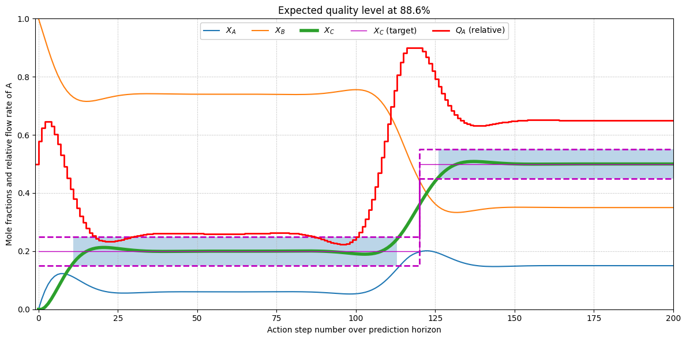

Wrapping up#
Import tools#
%matplotlib inline
from casadi import SX
from casadi import DM
from casadi import Function
from casadi import nlpsol
from casadi import vertcat
import numpy as np
import matplotlib.pyplot as plt
Create models#
class PlantModel:
""" Minimal implementation of system dynamics. """
def __init__(self):
x = SX.sym("x", 3) # Concentrations
k = SX.sym("k", 1) # Rate constant
N = SX.sym("N", 1) # System size
# Total flow rate.
Ndot = SX.sym("Ndot", 1)
# Feed flow rates.
ndot = SX.sym("ndot", 3)
ndot[1] = Ndot - ndot[0]
ndot[2] = 0
# Production rates of species.
vdot = k * x[0] * DM([-1, 0, 1])
# Symbolic balance equation.
xdot = (ndot - Ndot * x + vdot) / N
# Functional balance equation.
xrhs = Function(
"xdot",
[x, ndot[0], Ndot, N, k],
[xdot],
["x", "ndot_A", "Ndot", "N", "k"],
["xdot"]
)
self._states = x
self._balance_eqns_sym = xdot
self._balance_eqns_fun = xrhs
@property
def states(self):
return self._states
@property
def balance_eqns_sym(self):
return self._balance_eqns_sym
@property
def balance_eqns_fun(self):
return self._balance_eqns_fun
class InstantiatedPlant:
""" Instantiation of dynamics with fixed parameters. """
def __init__(self, model, k, N, Ndot, tau):
self._states = model.states
self._rhs = model.balance_eqns_fun
self._pars = [Ndot, N, k]
self._tau = tau
@property
def states(self):
return self._states
def step_euler(self, xn, pn):
return xn + self._tau * self._rhs(xn, pn, *self._pars)
class ControlsMPC:
""" A simple MPC for a given plant. """
def __init__(self, plant, Np, R, S):
self._plant = plant
self._horizon = Np
# TODO instead of computing cost directly in _integrate
# just store the values in arrays and provide these
# in optimize so that we can play for parametrization.
self._R = R
self._S = S
self._p = SX.sym("p", Np+1)
self._xp = SX.sym("xp", Np+1)
self._x0 = SX.sym("x0", 3, 1)
self._xt = SX.sym("xt", 3, Np+1)
self._xt[:, 0] = self._x0
J, F = self._integrate()
self._cost = J
self._sim = F
def _integrate(self):
print("Initial call to MPC: symbolic integration")
J = 0
x = self._xt[:, 0]
for ts in range(1, self._horizon+1):
x = self._plant.step_euler(x, self._p[ts])
self._xt[:, ts] = x
# TODO: implement an actual scaling so that both have
# the same magnitude and Q, R become scale-independent!
scale_error = x[2] - self._xp[ts]
scale_change = self._p[ts] - self._p[ts-1]
# scale_error /= (x[2] + 1.0e-15)
# scale_change /= (self._p[ts] + 1.0e-15)
cost_error = pow(scale_error, 2)
cost_change = self._R * pow(scale_change, 2)
J += cost_error + cost_change
J += self._S * pow(x[2] - self._xp[-1], 2)
F = Function("sim", [self._x0, self._p], [self._xt])
return J, F
def optimize(self, x0, p0, xsp, pmax):
# Constraint *negative time* command to the current value.
g = [self._p[0] - p0]
# XXX: abuse of notation! Notice below that the dictionary
# *unknowns* "x" are set to `self._p`, while *parameters*
# "p" are given the *x's*. This is because we are finding
# the optimal controls here and already know the target
# profile and initial states for concentrations *x*!
solver = nlpsol("solver", "ipopt", {
"f": self._cost,
"x": self._p,
"g": vertcat(*g),
"p": vertcat(self._xp, self._x0)
})
p = [*xsp, *x0]
guess = np.ones(self._horizon+1)
solution = solver(x0=guess, p=p, lbx=0, ubx=pmax, lbg=0, ubg=0)
popt = solution["x"].full().ravel()
xt = self._sim(x0, popt).full().T
return popt, xt, solution
Solution workflow#
Create dynamics#
model = PlantModel()
model.balance_eqns_fun
Function(xdot:(x[3],ndot_A,Ndot,N,k)->(xdot[3]) SXFunction)
Provide parameters#
k = 10.0
N = 500.0
Ndot = 3.0
ndot_A_max = 0.9 * Ndot
ndot_A_ini = 0.5 * Ndot
Np = 200
tau = 10.0
R = 0.1
S = 100.0
x0 = [0.0, 1.0, 0.0]
xsp = np.zeros(Np+1)
xsp[:3*Np//5] = 0.2
xsp[3*Np//5:] = 0.5
Setup controller#
plant = InstantiatedPlant(model, k, N, Ndot, tau)
mpc = ControlsMPC(plant, Np, R, S)
Initial call to MPC: symbolic integration
Optimize and retrieve results#
popt, xt, solution = mpc.optimize(x0, ndot_A_ini, xsp, ndot_A_max)
******************************************************************************
This program contains Ipopt, a library for large-scale nonlinear optimization.
Ipopt is released as open source code under the Eclipse Public License (EPL).
For more information visit https://github.com/coin-or/Ipopt
******************************************************************************
This is Ipopt version 3.14.11, running with linear solver MUMPS 5.4.1.
Number of nonzeros in equality constraint Jacobian...: 1
Number of nonzeros in inequality constraint Jacobian.: 0
Number of nonzeros in Lagrangian Hessian.............: 19904
Total number of variables............................: 201
variables with only lower bounds: 0
variables with lower and upper bounds: 201
variables with only upper bounds: 0
Total number of equality constraints.................: 1
Total number of inequality constraints...............: 0
inequality constraints with only lower bounds: 0
inequality constraints with lower and upper bounds: 0
inequality constraints with only upper bounds: 0
iter objective inf_pr inf_du lg(mu) ||d|| lg(rg) alpha_du alpha_pr ls
0 1.1289480e+01 5.00e-01 5.43e-01 -1.0 0.00e+00 - 0.00e+00 0.00e+00 0
1 7.8535959e+00 0.00e+00 2.21e-01 -1.0 5.00e-01 - 7.07e-01 1.00e+00f 1
2 3.6890341e+00 0.00e+00 1.19e-01 -1.7 4.83e-01 - 7.75e-01 1.00e+00f 1
3 1.2029735e+00 0.00e+00 3.97e-02 -2.5 4.59e-01 - 7.70e-01 1.00e+00f 1
4 5.4417451e-01 0.00e+00 6.69e-03 -2.5 4.00e-01 - 9.27e-01 1.00e+00f 1
5 4.1843093e-01 0.00e+00 1.16e-03 -3.8 2.60e-01 - 9.31e-01 1.00e+00f 1
6 3.9726342e-01 0.00e+00 5.56e-16 -3.8 1.69e-01 - 1.00e+00 1.00e+00f 1
7 3.9147600e-01 0.00e+00 1.46e-04 -5.7 1.02e-01 - 9.58e-01 1.00e+00f 1
8 3.9034658e-01 0.00e+00 1.77e-04 -5.7 4.13e-02 - 1.00e+00 9.11e-01f 1
9 3.9018244e-01 0.00e+00 5.13e-05 -5.7 1.78e-02 - 1.00e+00 9.72e-01f 1
iter objective inf_pr inf_du lg(mu) ||d|| lg(rg) alpha_du alpha_pr ls
10 3.9016625e-01 0.00e+00 2.24e-16 -5.7 5.31e-03 - 1.00e+00 1.00e+00f 1
11 3.9015738e-01 0.00e+00 3.42e-05 -8.6 2.57e-03 - 1.00e+00 9.43e-01f 1
12 3.9015662e-01 0.00e+00 1.33e-16 -8.6 1.28e-03 - 1.00e+00 1.00e+00f 1
13 3.9015655e-01 0.00e+00 1.50e-16 -8.6 5.36e-04 - 1.00e+00 1.00e+00f 1
14 3.9015655e-01 0.00e+00 1.86e-16 -8.6 1.69e-04 - 1.00e+00 1.00e+00f 1
Number of Iterations....: 14
(scaled) (unscaled)
Objective...............: 3.9015654580404924e-01 3.9015654580404924e-01
Dual infeasibility......: 1.8607716730850261e-16 1.8607716730850261e-16
Constraint violation....: 0.0000000000000000e+00 0.0000000000000000e+00
Variable bound violation: 0.0000000000000000e+00 0.0000000000000000e+00
Complementarity.........: 9.6345181304803798e-09 9.6345181304803798e-09
Overall NLP error.......: 9.6345181304803798e-09 9.6345181304803798e-09
Number of objective function evaluations = 15
Number of objective gradient evaluations = 15
Number of equality constraint evaluations = 15
Number of inequality constraint evaluations = 0
Number of equality constraint Jacobian evaluations = 15
Number of inequality constraint Jacobian evaluations = 0
Number of Lagrangian Hessian evaluations = 14
Total seconds in IPOPT = 0.047
EXIT: Optimal Solution Found.
solver : t_proc (avg) t_wall (avg) n_eval
nlp_f | 0 ( 0) 147.00us ( 9.80us) 15
nlp_g | 0 ( 0) 19.00us ( 1.27us) 15
nlp_grad_f | 0 ( 0) 286.00us ( 17.87us) 16
nlp_hess_l | 33.00ms ( 2.36ms) 14.32ms ( 1.02ms) 14
nlp_jac_g | 0 ( 0) 4.00us (250.00ns) 16
total | 37.00ms ( 37.00ms) 47.74ms ( 47.74ms) 1
Display results#
xsp_max = np.clip(xsp + 0.05, 0.0, 1.0)
xsp_min = np.clip(xsp - 0.05, 0.0, 1.0)
good = (xt[:, 2] >= xsp_min) & (xt[:, 2] <= xsp_max)
steps = list(range(Np+1))
quality = 100 * sum(good.astype("u8")) / len(good)
cmd = list(popt / Ndot)
cmd.append(cmd[-1])
plt.style.use("default")
fig = plt.figure(figsize=(12, 6))
plt.grid(linestyle=":")
plt.plot(steps, xt[:, 0], label="$X_A$")
plt.plot(steps, xt[:, 1], label="$X_B$")
plt.plot(steps, xt[:, 2], lw=4, label="$X_C$")
plt.step(steps, xsp_max, "m--", lw=2, label="_none_", where="post")
plt.step(steps, xsp_min, "m--", lw=2, label="_none_", where="post")
plt.step(steps, xsp, "m-", lw=1, label="$X_C$ (target)", where="post")
plt.fill_between(steps, xsp_min, xsp_max, where=good, alpha=0.3)
plt.step([-1, *steps], cmd, "r", lw=2, label="$Q_A$ (relative)", where="post")
plt.title(f"Expected quality level at {quality:.1f}%")
plt.ylabel("Mole fractions and relative flow rate of A")
plt.xlabel("Action step number over prediction horizon")
plt.legend(loc="upper center", fancybox=True, framealpha=1.0, ncol=6)
plt.xlim(-1, Np)
plt.ylim(0, 1)
plt.tight_layout()
